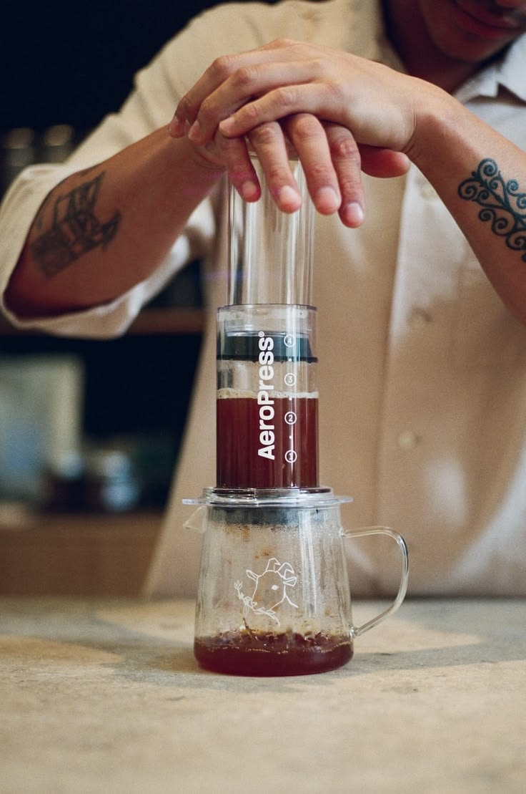

Chapter II · The Story
Why I Keep Coming Back To Coffee?
❖
“I never planned to fall in love with specialty coffee.”
It started with curiosity. A different café. A brewing method I'd never tried. A bag of beans from somewhere I'd never heard of.
Somewhere between early mornings, failed brews, conversations with baristas, and discovering origins from across the world, coffee became more than a drink.
It became a ritual. This journal exists because I never stopped asking questions about coffee.

FIRST GEAR · 2023
Field Note · 001
My First Coffee Equipment was an Aeropress.
01
Curiosity
Every cup teaches something new. Exploring unique fermentations and origins.
02
Exploration
Every origin tells a different story. Tracing terroirs across regions and altitudes.
03
Craftsmanship
Great coffee requires patience. Tuning grinds, water chemistry, and extraction timing.